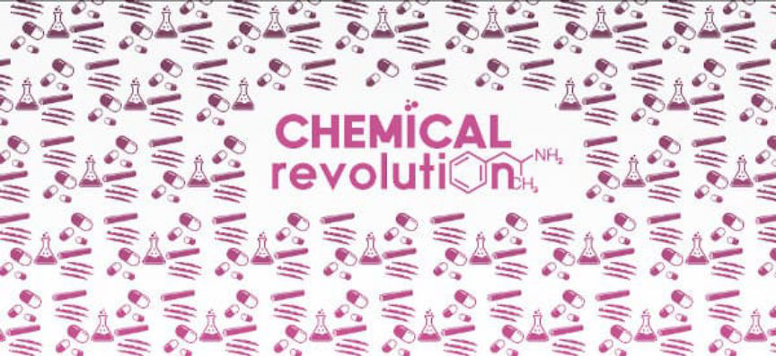
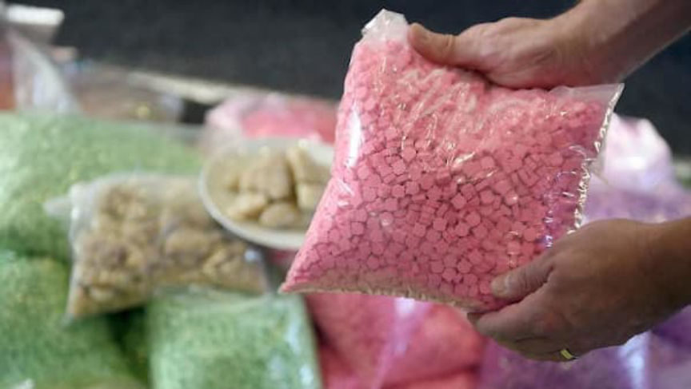
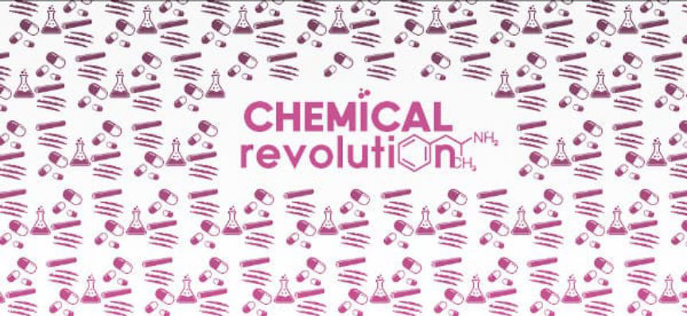
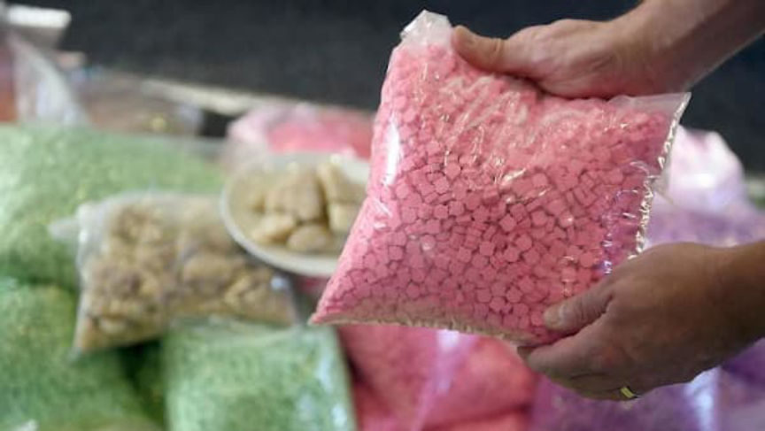

Second Chemical Revolution Trial Starts on January 10
~3 min read | Published on 2022-01-05, tagged Drugs, General-News using 623 words.
The second trial for the defendants behind the “Chemical Revolution” darkweb shop starts on January 10, according to an announcement made on Tuesday.
The District Court of Giessen announced the schedule for the second trial of the men who sold drugs through the Chemical Revolution storefront on the darkweb. The Frankfurt Public Prosecutor’s Office accuses the group of five defendants of operating the storefront between April 2018 and February 2019.
In August 2021, the court sentenced seven defendants to prison for crimes committed between late summer 2017 and January 2018. One of the defendants sentenced to prison in 2021 will be back in court for the upcoming trial.

In total, Chemical Revolution sold and shipped more than 130 kilograms of amphetamine, 42 kilograms of cannabis, 17 kilograms MDMA, 6 kilograms of cocaine, one kilogram of heroin, as well as an unknown number of LSD blotters.
From an earlier article about Chemical Revolution:
German authorities charged 11 people in connection with the operation of the Chemical Revolution drug shop. According to the Frankfurt Public Prosecutor, Chemical Revolution sold hundreds of kilograms of drugs and earned a profit of more than one million euros. Some of the defendants also face charges for selling drugs through the Wallstreet Market darkweb marketplace.
The “Chemical Revolution” shop was shut down as a result of a joint operation by the German Federal Criminal Police Office and the French criminal police. A 2018 drug trafficking arrest in Brandenburg set the Chemical Revolution investigation into motion; German authorities arrested a 26-year-old in Brandenburg who had close to 50 kilograms of amphetamine, 16 kilograms of cannabis, 2 kilograms of MDMA, 900 grams of cocaine, 600 grams of heroin, and many other substances in his possession. Investigators learned that the suspected drug trafficker had been storing drugs for Germany’s largest drug shop.

The second suspect, a 43-year-old Dutchman suspected of procuring drugs in the Netherlands and organizing transportation to Germany, was arrested in Hamburg on February 13, 2019. His arrest led to the seizure of over a total of 14 kilograms of a variety of drugs. A 24-year-old German from Hamburg suspected of mailing the drugs sold by Chemical Revolution was arrested the same day.
On February 19, 2019, a 34-year-old Hamburg man was arrested. Authorities accused the man of renting apartments in Hamburg as a part of the Chemical Revolution operation. According to prosecutors, co-conspirators used the apartments as staging areas where they packaged the drugs and prepared them for shipment to customers. Authorities arrested a 26-year-old and a 25-year-old the same day. Both had allegedly helped package and ship drugs for Chemical Revolution.
A 35-year-old German from Teltow-Fläming allegedly organized the transport of the drugs from the Netherlands to Germany for resale. Police arrested him on February 25, 2019. On February 28, 2019, a 44-year-old Polish man was arrested in Diepholz. He is also suspected of overseeing the transport of narcotics to Germany. On March 27, 2019, the police arrested another package courier–a 32-year-old Polish man was arrested in Poland. German authorities won the extradition case and had the man in custody in Germany on April 12, 2019.

German police arrested a 29-year-old man from Hamburg on April 29, 2019. Authorities accused the 29-year-old of overseeing the transportation of drugs between different Chemical Revolution co-conspirators.
Law enforcement in Spain arrested a 26-year-old German man on May 28, 2019. German authorities accused the 26-year-old of creating and managing the accounts and sites used by Chemical Revolution. The suspect also managed the organization’s funds, according to prosecutors.
Only three sentences are final, according to the public prosecutor’s office. The District Court expects the trial to take 15 days.
The District Court of Giessen announced the schedule for the second trial of the men who sold drugs through the Chemical Revolution storefront on the darkweb. The Frankfurt Public Prosecutor’s Office accuses the group of five defendants of operating the storefront between April 2018 and February 2019.
In August 2021, the court sentenced seven defendants to prison for crimes committed between late summer 2017 and January 2018. One of the defendants sentenced to prison in 2021 will be back in court for the upcoming trial.

Chemical Revolution had vendor shops on the darkweb and the surface web.
In total, Chemical Revolution sold and shipped more than 130 kilograms of amphetamine, 42 kilograms of cannabis, 17 kilograms MDMA, 6 kilograms of cocaine, one kilogram of heroin, as well as an unknown number of LSD blotters.
From an earlier article about Chemical Revolution:
German authorities charged 11 people in connection with the operation of the Chemical Revolution drug shop. According to the Frankfurt Public Prosecutor, Chemical Revolution sold hundreds of kilograms of drugs and earned a profit of more than one million euros. Some of the defendants also face charges for selling drugs through the Wallstreet Market darkweb marketplace.
The “Chemical Revolution” shop was shut down as a result of a joint operation by the German Federal Criminal Police Office and the French criminal police. A 2018 drug trafficking arrest in Brandenburg set the Chemical Revolution investigation into motion; German authorities arrested a 26-year-old in Brandenburg who had close to 50 kilograms of amphetamine, 16 kilograms of cannabis, 2 kilograms of MDMA, 900 grams of cocaine, 600 grams of heroin, and many other substances in his possession. Investigators learned that the suspected drug trafficker had been storing drugs for Germany’s largest drug shop.
They were the largest darkweb drug trafficking organization in Germany at the time of the bust.
The second suspect, a 43-year-old Dutchman suspected of procuring drugs in the Netherlands and organizing transportation to Germany, was arrested in Hamburg on February 13, 2019. His arrest led to the seizure of over a total of 14 kilograms of a variety of drugs. A 24-year-old German from Hamburg suspected of mailing the drugs sold by Chemical Revolution was arrested the same day.
On February 19, 2019, a 34-year-old Hamburg man was arrested. Authorities accused the man of renting apartments in Hamburg as a part of the Chemical Revolution operation. According to prosecutors, co-conspirators used the apartments as staging areas where they packaged the drugs and prepared them for shipment to customers. Authorities arrested a 26-year-old and a 25-year-old the same day. Both had allegedly helped package and ship drugs for Chemical Revolution.
A 35-year-old German from Teltow-Fläming allegedly organized the transport of the drugs from the Netherlands to Germany for resale. Police arrested him on February 25, 2019. On February 28, 2019, a 44-year-old Polish man was arrested in Diepholz. He is also suspected of overseeing the transport of narcotics to Germany. On March 27, 2019, the police arrested another package courier–a 32-year-old Polish man was arrested in Poland. German authorities won the extradition case and had the man in custody in Germany on April 12, 2019.

German police arrested a 29-year-old man from Hamburg on April 29, 2019. Authorities accused the 29-year-old of overseeing the transportation of drugs between different Chemical Revolution co-conspirators.
Law enforcement in Spain arrested a 26-year-old German man on May 28, 2019. German authorities accused the 26-year-old of creating and managing the accounts and sites used by Chemical Revolution. The suspect also managed the organization’s funds, according to prosecutors.
Only three sentences are final, according to the public prosecutor’s office. The District Court expects the trial to take 15 days.